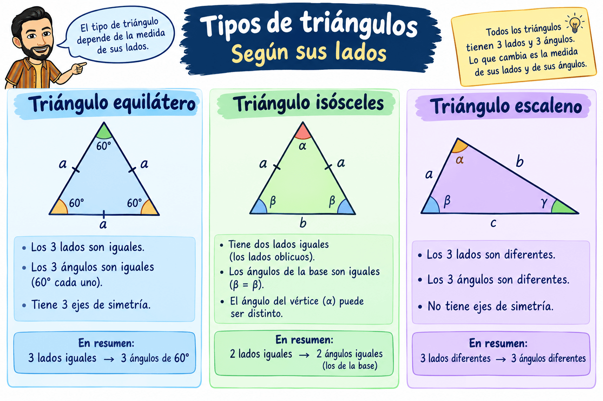
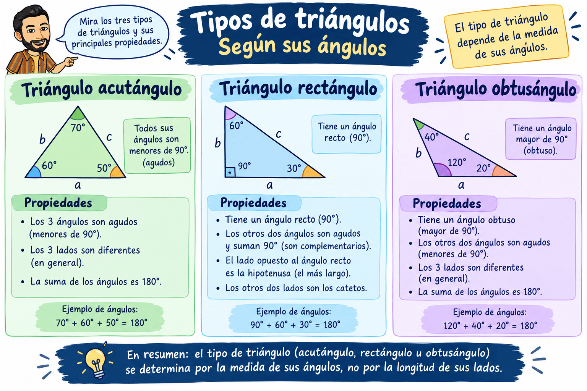
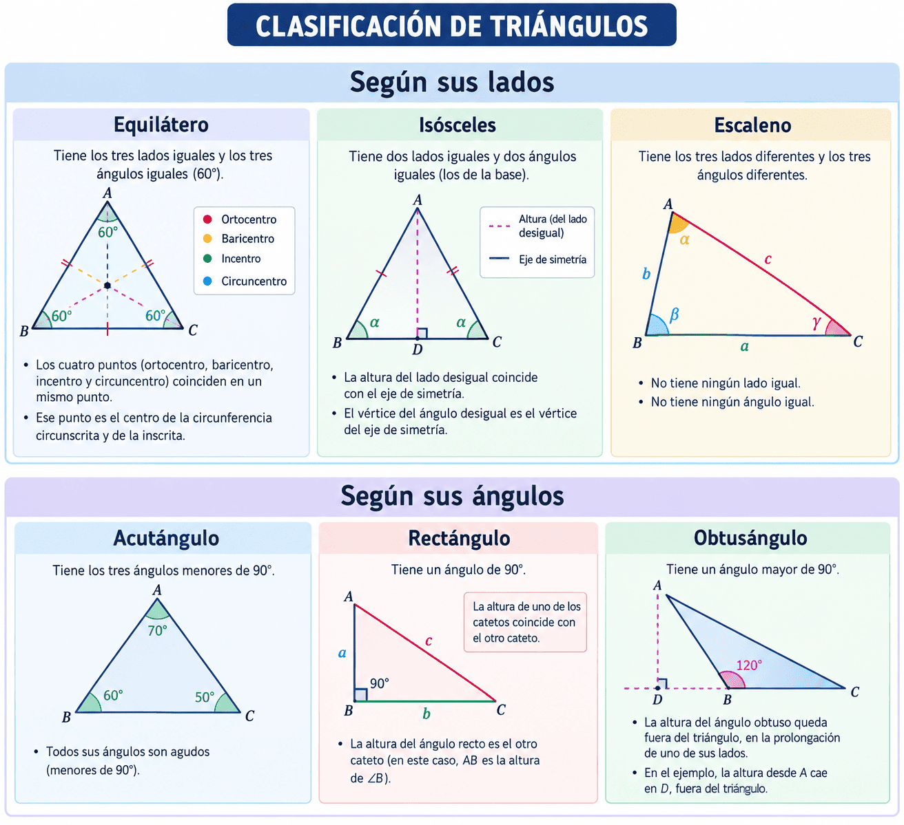
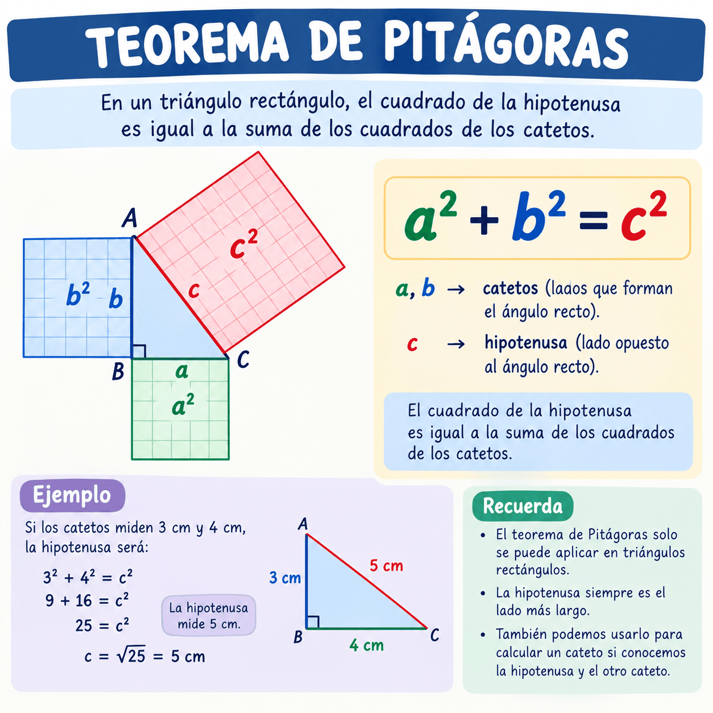

Clasificación de triángulos
Los triángulos se pueden clasificar según sus lados y según sus ángulos.
Según sus lados
- Equilátero: Tiene los tres lados iguales.
- Sus ángulos todos miden 60º.
- Isósceles: Tiene dos lados iguales.
- Dos ángulos son iguales y uno desigual.
- Escaleno: Tiene los tres lados diferentes.
- Sus tres ángulos, por tanto, son diferentes.

Según sus ángulos
- Acutángulo: Sus tres ángulos son menores de 90°.
- Rectángulo: Tiene un ángulo de 90°.
- Obtusángulo: Tiene un ángulo mayor de 90°.
Recuerda que la suma de los tres ángulos de cualquier triángulo es: 180°.

Repasemos las dos clasificaciones (según sus lados y según sus ángulos) conjuntamente:

(El Teorema de Pitágoras lo desarrollaremos en el siguiente apartado).
Teorema de Pitágoras
En un triángulo rectángulo, el lado situado frente al ángulo recto se llama hipotenusa y es el más largo. Los otros dos lados son los catetos.
El teorema de Pitágoras solamente se puede utilizar en triángulos rectángulos.
Relaciona los dos catetos con la hipotenusa:
\(a^2+b^2=c^2\)
donde \(c\) es siempre la hipotenusa.
Por ejemplo, si los catetos miden 3 cm y 4 cm:
\(3^2+4^2=c^2\)
\(9+16=c^2\)
\(25=c^2\)
\(c=5\text{ cm}\)
Para calcular un cateto
Si conocemos la hipotenusa y un cateto:
\(a=\sqrt{c^2-b^2}\)
Pasos recomendados:
- Identificar el ángulo recto.
- Identificar la hipotenusa.
- Escribir la fórmula.
- Sustituir los datos.
- Calcular.
- Comprobar que el resultado tiene sentido.
